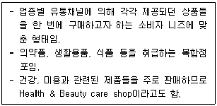
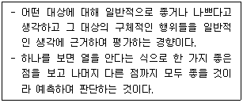
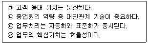
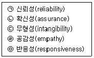
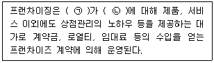
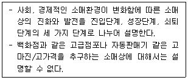
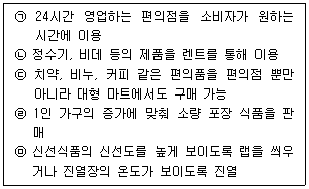
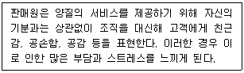
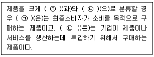
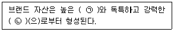

유통관리사-3급 (2022-08-20 기출문제)
1과목: 유통상식
1. 아래 글상자에서 공통으로 설명하는 소매업태로 가장 옳은 것은?

- 전문할인점
- 하이퍼마켓
- 백화점
- 편의점
- 드럭스토어
(정답률: 80%)

2. 편의품에 대한 설명으로 가장 옳지 않은 것은?
- 상품회전율이 높은 상품이다.
- 단가가 낮으며 판매마진율 또한 낮은 상품이다.
- 습관적으로 구매하는 상품이다.
- 샴푸, 비누 등의 생활필수품이 해당된다.
- 일반적으로 고관여 상품에 해당된다.
(정답률: 62%)
3. 아래 글상자에서 설명하는 효과로 가장 옳은 것은?

- 맥락효과(context effect)
- 방사효과(radiation effect)
- 최신효과(recency effect)
- 빈발효과(frequency effect)
- 후광효과(halo effect)
(정답률: 66%)
4. 기업이 지켜야할 윤리규범과 관련한 내용으로 가장 옳지 않은 것은?
- 잘못을 범한 사람을 벌하거나 제재하여 불법적인 행위예방을 강조하는 윤리규범
- 법이나 규제 등 외적 기준을 준수하는 윤리규범
- 범죄 행위를 하지 않는 것에 목적을 두고 있는 윤리규범
- 법적 준수를 넘어 정직, 상호간 존중 등의 핵심 가치를 강조하는 윤리규범
- 직접적인 실행여부보다 형식에 치우치는 윤리규범
(정답률: 84%)
5. 유통산업발전법(시행 2021.1.1. 법률 제17761호, 2020.12.29., 타법개정)상 용어의 정의로 옳지 않은 것은?
- 유통표준코드란 상품ㆍ상품포장ㆍ포장용기 또는 운반용기의 표면에 표준화된 체계에 따라 표기된 숫자와 바코드 등으로서 산업통상자원부령으로 정하는 것을 말한다.
- 판매시점 정보관리시스템이란 상품을 판매할 때 활용하는 시스템으로서 광학적 자동판독방식에 따라 상품의 판매ㆍ매입 또는 배송 등에 관한 정보가 수록된 것을 말한다.
- 유통설비란 화물의 수송ㆍ포장ㆍ하역ㆍ운반과 이를 관리하는 물류정보처리활동에 사용되는 물품ㆍ기계ㆍ장치 등의 설비를 말한다.
- 공동집배송센터란 여러 유통사업자 또는 제조업자가 공동으로 사용할 수 있도록 집배송시설 및 부대업무시설이 설치되어 있는 지역 및 시설물을 말한다.
- 무점포판매란 상시 운영되는 매장을 가진 점포를 두지 아니하고 상품을 판매하는 것으로서 산업통상자원부령으로 정하는 것을 말한다.
(정답률: 39%)
6. 도소매업의 유형과 특징에 대한 설명 중에서 가장 옳지 않은 것은?
- 도매상은 재판매 또는 사업을 목적으로 구매하는 고객에게 상품을 판매하고 이와 관련된 활동을 수행하는 상인이다.
- 소매상은 최종 소비자를 대상으로 활동하기 때문에, 최종 소비자의 요구사항에 관심을 가진다.
- 도매상은 소매상에 비하여 더 넓은 상권을 대상으로 대규모의 거래를 한다는 점이 특징이다.
- 도매상이 수행하는 기능은 기본적으로 조달과 분배이며, 다수의 제조업자들로부터 상품을 구매하여 이를 소매상에게 배분하는 기능을 수행한다.
- 소매상의 유형은 크게 슈퍼마켓과 백화점 같은 무점포 소매상과 방문판매나 자동판매기 같은 점포형 소매상으로 나눌 수 있다.
(정답률: 68%)
7. 아래 글상자의 내용 중에서 상대적으로 높은 고객접촉도를 가지는 업무의 특성을 모두 나열한 것으로 가장 옳은 것은?

- ㉠, ㉡
- ㉠, ㉢
- ㉡, ㉢
- ㉡, ㉣
- ㉢, ㉣
(정답률: 50%)
8. 판매원이 갖추어야 할 시장지식으로 가장 옳은 것은?
- 주문서 작성방법
- 상품의 재고상황
- 상품의 원산지
- 고객의 구매행동 특성
- 상품의 보증기간
(정답률: 68%)
9. 아래 글상자 내용 중 서비스품질을 측정할 수 있는 차원을 모두 나열한 것으로 가장 옳은 것은?

- ㉠
- ㉠, ㉡
- ㉠, ㉡, ㉢
- ㉠, ㉡, ㉣, ㉤
- ㉠, ㉡, ㉢, ㉣, ㉤
(정답률: 55%)
10. 텔레마케팅을 진행할 경우 지켜야 할 전화예절로 가장 옳지 않은 것은?
- 전화는 즉시 받는다.
- 신원을 확실하게 밝힌다.
- 매너와 에티켓을 지킨다.
- 간결하고 알아듣기 쉽게 말한다.
- 강한 억양으로 목소리를 높여 빠르게 말한다.
(정답률: 91%)
11. 아래 글상자의 괄호 안에 들어갈 용어를 순서대로 나열한 것으로 가장 옳은 것은?

- ㉠ 가맹본부, ㉡ 가맹점사업자
- ㉠ 가맹점사업자, ㉡ 가맹본부
- ㉠ 가맹본부, ㉡ 제조업체
- ㉠ 제조업체, ㉡ 가맹본부
- ㉠ 유통업체, ㉡ 제조업체
(정답률: 82%)
12. 중간상의 존재로 나타나는 효과로 가장 옳지 않은 것은?
- 총 거래수의 감소
- 거래의 표준화
- 상품 및 시장정보의 제공
- 생산자의 재고 비용 증대
- 시간, 장소, 형태 상의 불일치 해소
(정답률: 62%)
13. 최근에 등장한 O2O에 대한 설명으로 가장 옳지 않은 것은?
- 음료 주문을 온라인에서 하고, 제품은 매장에서 수령하기도 한다.
- 개인 간의 거래에 활발하게 이용되고 있다.
- 온라인 플랫폼을 통해 승객과 기사를 연결해 주기도 한다.
- 온라인과 오프라인의 장점을 결합하고 있다.
- 일반적으로 B2C 거래에서 활용된다.
(정답률: 39%)
14. 상품의 다양성과 구색처럼 취급하는 상품계열에 따른 소매상의 분류 유형으로 가장 옳지 않은 것은?
- 할인점
- 백화점
- 전문점
- 대형마트
- 셀프서비스
(정답률: 66%)
15. 소매업의 역할 중 소비자에 대한 기능으로 가장 옳지 않은 것은?
- 올바른 상품을 적시에 제공하는 역할
- 필요한 상품의 재고를 보유하는 역할
- 쇼핑의 즐거움을 제공하는 역할
- 위험을 부담하고 금융기능을 제공하는 역할
- 소비자 가격을 결정하는 역할
(정답률: 64%)
16. 판매원이 매장 내에서 수행하는 업무로 가장 옳지 않은 것은?
- 제품판매
- 소비자 불만처리
- 제품수납
- 인건비 관리
- 제품진열
(정답률: 84%)
17. 기업의 사회적 책임 활동에 대한 내용으로 가장 옳지 않은 것은?
- 기업과 관련된 이해 당사자들이 기업에 어떠한 사회적책임을 요구하고 있는지에 대한 분석과 이해가 필요한 활동이다.
- 기업 이윤추구와의 연관성을 고려해서 기업이 어떠한 사회적 책임 활동을 수행할 것인지 찾아 실행하는 것이다.
- 법률에 의해 의무적으로 실행하도록 요구된 활동만을 충실히 실행하는 것이다.
- 사회구성원들의 공동이익 창출에 유익한 활동을 계획하고 실행하는 것이다.
- 기업이 처해있는 사회 환경 속에서 사회 전체 이익에 기여할 수 있는 방안을 찾아 실행하는 것이다.
(정답률: 79%)
18. 아래 글상자에서 설명하는 소매상 발전이론으로 가장 옳은 것은?

- 자연도태설
- 소매수레바퀴가설
- 변증법 과정
- 소매상 수명주기이론
- 소매아코디언이론
(정답률: 50%)
19. 아래 글상자에서 설명하는 유통경로가 창출하는 효용 중 형태효용을 모두 나열한 것으로 가장 옳은 것은?

- ㉠, ㉡
- ㉢, ㉣
- ㉣, ㉤
- ㉠, ㉡, ㉢
- ㉡, ㉢, ㉤
(정답률: 47%)
20. 아래 글상자에서 설명하는 내용과 관련이 깊은 용어로 가장 옳은 것은?

- 감정노동
- 품질과 생산성간의 상충관계
- 고객 간 갈등
- 응답성
- 판매원의 사회화
(정답률: 76%)
2과목: 판매 및 고객관리
21. 상품의 구성요소로 가장 옳지 않은 것은?
- 기능과 품질
- 브랜드
- 패키징(Packaging)
- 레이블링(Labeling)
- 판매자 정보
(정답률: 68%)
22. 점포의 공간 관리 중 고객의 시선을 사로잡아 점포로 끌어들이는 역할을 수행하는 것으로 가장 옳은 것은?
- 후퇴평면 진열
- 멀티숍
- 버블계획
- 엔드 매대
- 쇼윈도우
(정답률: 79%)
23. 판매원이 갖추어야 할 의사소통의 기술에 대한 설명으로 가장 옳지 않은 것은?
- 지나친 전문용어, 외국어를 남발하지 않는다.
- 명령형 보다 의뢰형으로 바꾸어 말한다.
- 부정형은 긍정 혹은 권유하는 말로 바꾸어 사용한다.
- 발음은 또박또박 명확하게 한다.
- 친근감을 위해 유행어, 속어 등을 사용한다.
(정답률: 88%)
24. 진실의 순간(MOT: Moments of Truth), 즉 고객접점관리에 대한 설명으로 가장 옳지 않은 것은?
- 고객에 대한 세심한 배려가 필요하다.
- 매장의 청결, 상품의 진열 상태도 영향을 준다.
- 신속한 대응을 위해 종업원에게 권한 위임이 필요하다.
- 고객이 종업원과 마주하는 첫 10분간만 적용된다.
- 여러 접점 중 단 한 곳에서라도 부정적 인상을 준다면 기업의 이미지는 손상된다.
(정답률: 71%)
25. 식료품점이나 드럭스토어처럼 공간효율성을 강조하는 점포에 적합한 배치방법으로 가장 옳은 것은?
- 나선형 배치
- 루프형 배치
- 자유형 배치
- 경주로형 배치
- 격자형 배치
(정답률: 68%)
26. 점포 내에서 이루어지는 비가격 판매촉진수단에 대한 설명으로 가장 옳지 않은 것은?
- 보너스 팩(bonus pack)은 묶음포장, 번들 형태로 정상가격에 제품을 추가 제공하는 방식을 말한다.
- 샘플링(sampling)은 정상제품을 소량 견본품으로 제작하여 저렴한 가격에 판매하는 방식을 말한다.
- 공개시연(demonstration)은 실제 제품의 시연을 통해 사용법과 기능의 특장점을 홍보하는 방법을 말한다.
- 멤버십(membership)은 회원에 대하여 우대 특전을 제공하는 로열티 프로그램 방식을 말한다.
- 콘테스트(contest)는 사은품 및 상금을 획득하기 위해 퀴즈, 공모 등을 통해 소비자가 참여하는 경진대회 형태의 촉진수단을 말한다.
(정답률: 60%)
27. 고객 불만 처리 시 응대요령으로 가장 옳지 않은 것은?
- 고객을 존중하는 태도로 응대한다.
- 고객과 논쟁하지 않는다.
- 고객에 대한 선입견을 가지고 자기 통제력을 유지한다.
- 고객의 의견을 긍정적으로 경청한다.
- 고객의 입장에 공감하며 성의 있는 자세로 임한다.
(정답률: 86%)
28. 매장에 상품을 진열할 때 유의할 사항으로 가장 옳지 않은 것은?
- 상품, 가격, 용량을 보기 쉽게 진열한다.
- 상품의 훼손을 피하기 위해 고객의 손이 닿지 않게 진열한다.
- 상표가 잘 보이게 진열한다.
- 상품이 무너지지 않게 안정적으로 진열한다.
- 고객의 쇼핑 편의를 위해 품종경계를 구분하여 진열한다.
(정답률: 90%)
29. 구매시점(POP: Point of Purchase)광고에 대한 설명으로 가장 옳지 않은 것은?
- 주로 소매점의 점두나 진열대 및 점포 내에 전시한다.
- 소비자들의 구매를 유도할 목적으로 사용되는 판매촉진전략 중 하나이다.
- 매장의 분위기나 이미지 연출과는 관련이 없다.
- 판매원의 도움 없이 제품 정보를 제공하기도 한다.
- 소비자의 충동구매를 유인하는 역할을 한다.
(정답률: 80%)
30. 고객불만 처리 방법 중 하나인 MTP법에 대한 내용으로 가장 옳지 않은 것은?
- M은 사람(Man)에 대한 부분으로 고객의 불만에 응대하는 사람을 바꾼다.
- T는 책임감(Take responsibility)에 대한 부분으로 친절, 신속하게 책임지고 해결한다.
- 고객의 언성이 높아질 경우 상급자가 응대할 수 있도록 안내한다.
- 고객이 서있을 경우 편안한 장소로 이동하여 앉도록 한다.
- 매장에서 불만이 발생한 고객을 고객만족팀 또는 소비자 상담실로 안내한다.
(정답률: 42%)
31. 기업의 각 제품에 고유한 브랜드명을 붙여 브랜드별로 서로 다른 세분시장을 목표로 삼을 때 유용한 브랜딩 전략으로 가장 옳은 것은?
- 다제품브랜딩(multiproduct branding)
- 다수브랜딩(multibranding)
- 프라이빗브랜딩(private branding)
- 재판매자브랜딩(reseller branding)
- 제휴브랜딩(co-branding)
(정답률: 31%)
32. 포장에 대한 설명으로 가장 옳지 않은 것은?
- 포장은 용기를 포함하여 제품을 감싸는 물체를 총칭한다.
- 포장은 제품의 이미지를 향상시켜 주는 기능을 갖는다.
- 포장은 고객이 구매의사 결정을 내리는 것과는 무관하다.
- 포장을 통해 유통업체와 소비자에게 운반용이성을 제공한다.
- 제품의 보호는 포장의 기능 중 하나이다.
(정답률: 82%)
33. 고객응대 시 사용할 수 있는 설득화법에 대한 내용으로 가장 옳지 않은 것은?
- 고객의 특성이나 의도를 정확하고 신속하게 파악한다.
- 고객의 수준에 적합한 표현을 한다.
- 고객의 장점을 인정하여 칭찬을 아끼지 않는다.
- 고객의 말에 귀를 기울이고 고객의 반응을 살피면서 대화한다.
- 정치문제나 종교에 대한 이야기를 통해 공감대를 형성한다.
(정답률: 87%)
34. 교차판매에 적합한 상품유형으로 가장 옳은 것은?
- 대체재
- 보완재
- 정상재
- 사치재
- 필수재
(정답률: 43%)
35. 아래 글상자의 괄호 안에 들어갈 용어로 가장 옳은 것은?

- ㉠ 편의품, ㉡ 선매품
- ㉠ 편의품, ㉡ 전문품
- ㉠ 선매품, ㉡ 전문품
- ㉠ 소비재, ㉡ 산업재
- ㉠ 산업재, ㉡ 소비재
(정답률: 59%)
36. 매장에서 근무하는 판매원의 자세로 가장 옳지 않은 것은?
- 찾아온 고객을 관심 있게 응시하되 뚫어지게 쳐다보지는 않는다.
- 가급적 사적인 용건을 삼가며 판매사원간의 예의를 지킨다.
- 근무 중에 다른 생각을 하며 무표정하게 서 있지 않는다.
- 고객이 상품을 보고 있을 때 쇼케이스와 고객 사이를 통로 삼아 지나가지 않는다.
- 고객응대 중에 다른 고객이 부르면 고개만 돌려서 확인했음을 알려준다.
(정답률: 77%)
37. POS(Point of Sales)시스템을 통해 획득한 자료를 활용 가능한 분야로 가장 옳지 않은 것은?
- 시간대별 매출분석
- 인기상품, 비인기상품에 대한 상품판매 동향 분석
- 적정 발주 및 재고량 산출
- 고객 연령대별 판매 분석
- 적정 물류비 및 배송비 분석
(정답률: 57%)
38. 아래 글상자의 괄호 안에 들어갈 용어로 가장 옳은 것은?

- ㉠ 브랜드 아이덴티티, ㉡ 브랜드 인지도
- ㉠ 브랜드 인지도, ㉡ 브랜드 이미지
- ㉠ 브랜드 인지도, ㉡ 브랜드 확장
- ㉠ 브랜드 아이덴티티, ㉡ 브랜드 확장
- ㉠ 브랜드 이미지, ㉡ 라인 확장
(정답률: 74%)
39. 서비스의 기본 특성으로 가장 옳지 않은 것은?
- 무형성
- 비분리성
- 이질성
- 소멸성
- 유형성
(정답률: 52%)
40. 소비자를 대상으로 하는 판매촉진 방법으로 가장 옳지 않은 것은?
- 할인쿠폰
- 세일
- 보너스 팩
- 사은품
- 판매장려금
(정답률: 81%)
41. 커뮤니케이션(communication) 과정에 대한 설명으로 가장 옳지 않은 것은?
- 발신자(sender)는 메시지를 보내는 주체이다.
- 부호화(encoding)는 발신자가 전달하고자 하는 메시지 내용을 시각적, 청각적 부호 등으로 전환시키는 과정이다.
- 반응(response)은 메시지를 전달한 후의 발신자 행동을 의미한다.
- 잡음(noise)은 커뮤니케이션 과정에서 끼어드는 방해요인으로, 계획되지 않은 현상이나 왜곡이 일어나는 것을 뜻한다.
- 해독화(decoding)란 발신자가 부호화하여 전달한 의미를 수신자가 해석하는 과정을 말한다.
(정답률: 51%)
42. 소매업체의 서비스 회복(service recovery)에 대한 설명으로 가장 옳지 않은 것은?
- 고객의 소리에 귀를 기울인다.
- 공정한 해결책을 제공한다.
- 신속하게 문제를 처리한다.
- 고객의 불만·불평에 공감하려는 자세가 필요하다.
- 서비스 실패시 서비스 회복은 불가능하다.
(정답률: 85%)
43. 구매 후 자신의 구매의사결정에 대한 고객의 심리적 불안감을 낮춰주기 위한 사후관리 활동으로 가장 옳은 것은?
- 구매 대안들에 대한 다양한 정보를 제공한다.
- 소비자에게 문제해결의 시급성과 당위성을 느끼게 해야 한다.
- 소비자에게 문제를 인식하는 계기를 제공한다.
- 판매 이후 해당 제품의 우수성 등에 대한 자료를 소비자에게 꾸준히 제공한다.
- 구매 대안들에 대한 평가 기준을 제시해준다.
(정답률: 53%)
44. POS(Point of sales)시스템에 대한 설명으로 가장 옳지 않은 것은?
- POS시스템 도입으로 잘 팔리는 상품과 잘 팔리지 않는 상품을 선별할 수 있는 단품관리가 가능해졌다.
- POS터미널은 통신기능과 금전등록기능을 갖춘 컴퓨터 본체와 스캐너로 구성되어 있다.
- POS는 모든 정보원천으로부터 고객정보를 통합·분석하는 고객관계관리 시스템이다.
- POS시스템 도입으로 매상등록시간이 단축되었다.
- POS시스템 도입으로 인해 판매원의 입력오류를 방지할 수 있다.
(정답률: 49%)
45. 제품 및 서비스에 대해 개인이 가지고 있는 비교적 일관된 평가, 느낌, 행동성향을 의미하는 고객의 심리적 요인으로 가장 옳은 것은?
- 동기
- 지각
- 학습
- 성격
- 태도
(정답률: 42%)